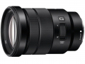

器材库 > APS画幅镜头 > E PZ 18-105/4 G OSS

详细规格
镜头类型
标准变焦镜头
发布日期
2013-08-27
厂家推荐价格
66,150.00 （日元）
焦距
18mm-105mm
等效35mm画幅焦距
27mm-157.5mm
最大光圈
f/4
最小光圈
f/22
视角（对角）
76°-15°
镜头结构
16片/12组
光圈叶片
7片
最近对焦距离
0.45m（广角）～0.95m（长焦）cm
最大放大倍率
0.11
滤镜口径
72mm
镜头卡口
Sony E
防抖
是
颜色
黑色
尺寸
78 x 110mm
重量
427g
juniorbibo2014-11-04 15:374.58 分
操作性 4.50耐用性 5.00性价比 5.00解像力 3.50色彩还原 4.50机械结构 5.00
xiaoqiangvvv2014-03-26 12:353.92 分
操作性 4.00耐用性 4.50性价比 4.50解像力 2.00色彩还原 4.50机械结构 4.00
logic2582014-02-09 20:344.67 分
操作性 4.50耐用性 4.50性价比 5.00解像力 4.50色彩还原 5.00机械结构 4.50